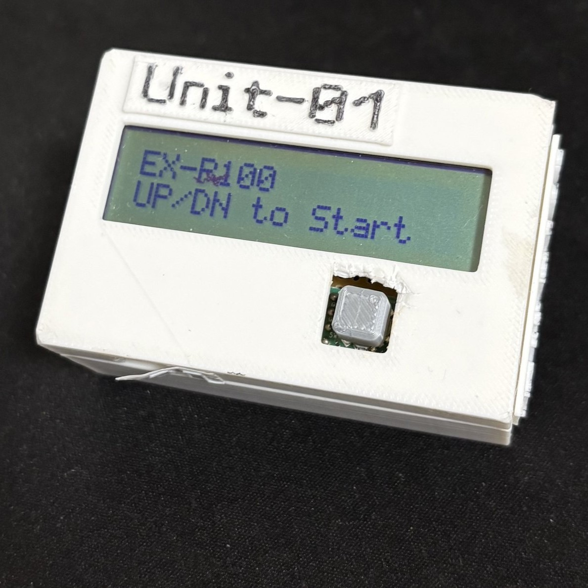
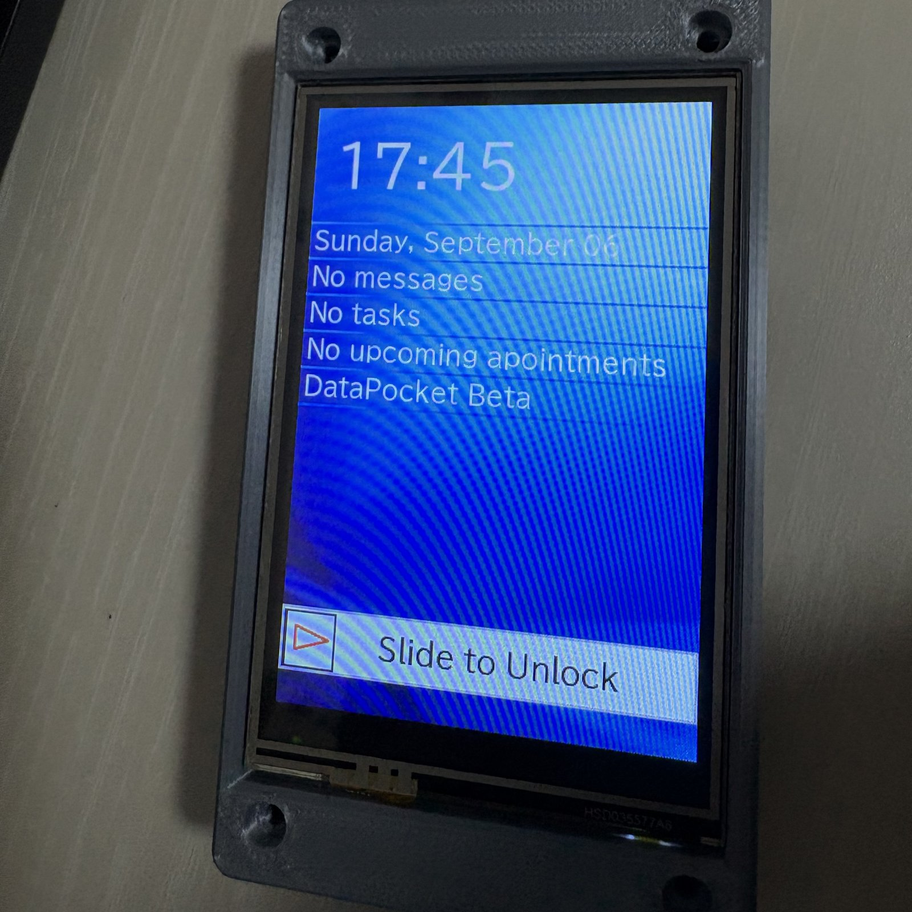

2026.10
ポケットベル

FEATURED PROJECT
F100 開発中

LATEST DEVICES
開発中のものを含む、最新の4つのデバイス。


LATEST WORKS
これまでの作品や構想をざっくりと
古いFire Stickで日常的な情報を常時表示。緊急の際はクールに警告。
青軸キースイッチとキーボードを接続。段ボール製で省スペース。
ヘルメットに接続した小さなOLEDディスプレイで、ターンバイターンの案内。自転車のスマホ運転を防止。
往年のPC-98を意識した、レトロなデスクトップPC。
ESP32C3を使用し、赤外線とBLEの機能を兼ねた多機能リモコン。